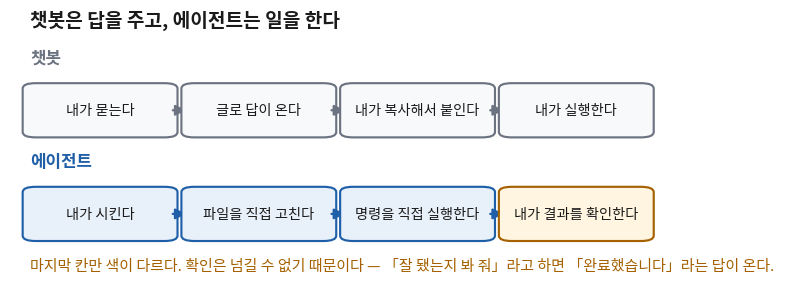
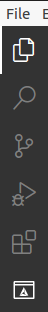
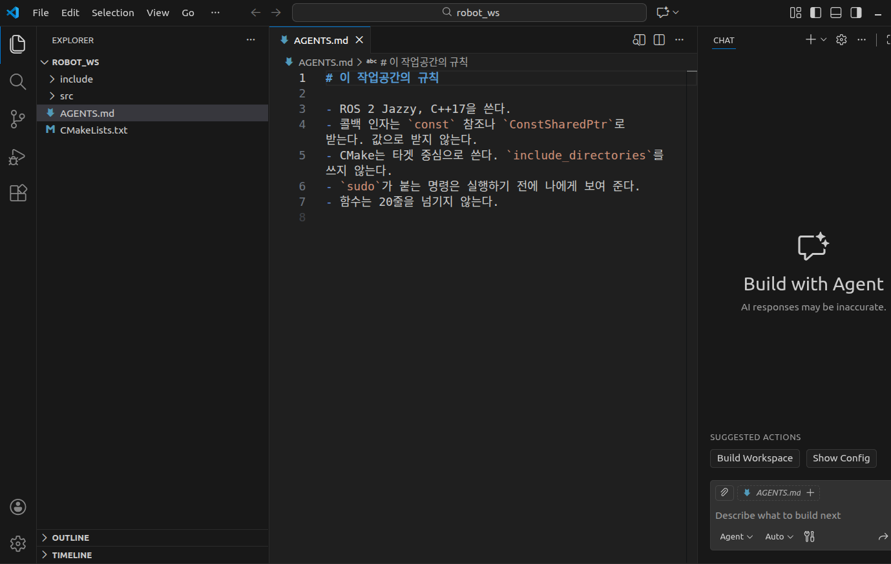

에이전트를 개발환경에 붙이기
- 터미널에서 도는 에이전트란 무엇이고, 챗봇과 무엇이 다른가?
- 무엇을 물어보게 하고 무엇을 그냥 하게 할 것인가?
- 매번 같은 말을 반복하지 않으려면 어떻게 하나?
- 에이전트가 엉뚱한 답을 하는 가장 흔한 이유는 무엇인가?
이 회차가 안 되면 나머지 27회가 전부 안 된다. 이 강의는 설치와 설정과 코드 뼈대를 에이전트에게 넘기는 것을 전제로 짜여 있다. 넘길 상대가 없으면 남는 것은 명령어를 손으로 치는 시간뿐이고, 그러면 실습 시간이 사라진다.
그런데 오늘 배울 것의 절반은 「어떻게 붙이나」가 아니라 「무엇을 넘기지 않을 것인가」다. 에이전트는 파일을 고치고 명령을 실행한다. 되돌릴 수 없는 일을 한다는 뜻이다. 그래서 붙이기 전에 무엇을 물어보게 할지를 먼저 정한다.
쓰는 도구는 사람마다 다를 수 있고, 어느 것을 쓰든 괜찮다. 터미널이나 편집기 안에서 돌면서 파일을 고치고 명령을 실행할 수 있는 것이면 무엇이든 된다. 아래 절차는 그런 도구라면 공통으로 해당한다.
한 장 요약 — 학기가 끝나도 이 표만 남으면 된다
무엇을 먼저 볼지: 가운데 「누가 하나」 열. 이 강의 30회 내내 이 열로 판단한다.
| 무엇 | 누가 하나 | 내가 확인하는 것 |
|---|---|---|
| 설치·설정·파일 만들기 | 🟢 맡긴다 | 결과물이 실제로 있나 |
| 코드·빌드 설정 쓰기 | 🟡 맡기되 검사 | 검사 목록으로 훑는다 |
| 됐는지 확인하기 | 🔴 사람이 한다 | 내 눈으로 본 화면 |
sudo·파일 삭제·강제 덮어쓰기 | ⛔ 확인 후에만 | 실행 전에 명령을 읽었나 |
| 매번 반복하는 요구사항 | 파일에 적어 둔다 (AGENTS.md) | 새 대화에서도 규칙이 지켜지나 |
① 챗봇은 답을 주고, 에이전트는 일을 한다 🟡 맡기되 검사
둘 다 같은 종류의 인공지능을 쓴다. 다른 것은 「손이 있느냐」다. 챗봇은 글을 돌려주고 거기서 끝난다. 옮겨 붙이고 실행하는 것은 사람 몫이다. 에이전트는 내 컴퓨터의 파일을 직접 고치고 명령을 직접 실행한다.

마지막 칸만 색이 다른 이유
그림에서 에이전트 줄의 앞 세 칸은 사람 손을 떠났다. 시키면 알아서 한다. 그런데 네 번째 칸은 여전히 사람 자리다. 왜 그런가.
에이전트에게 "잘 됐는지 봐 줘"라고 하면 이런 답이 온다.
"작업을 완료했습니다. 정상적으로 설정되었습니다."이 문장에는 내가 확인할 수 있는 것이 하나도 없다. 무엇이 어떻게 됐다는 것인지, 어디를 보면 그걸 알 수 있는지가 없다. 그래서 이 강의는 요구를 이렇게 바꾼다.
| 챗봇 | 에이전트 | |
|---|---|---|
| 내가 하는 말 | "이거 어떻게 해?" | "이거 해 줘" |
| 돌아오는 것 | 설명과 코드 글 | 바뀐 파일과 실행 결과 |
| 내 컴퓨터를 보나 | 못 본다 | 열린 폴더 안은 본다 |
| 실수했을 때 | 내가 안 붙이면 그만이다 | 이미 파일이 바뀌어 있다 |
| 그래서 필요한 것 | 읽고 판단하기 | 미리 정한 규칙과 사후 확인 |
② 이 세 줄을 알아 두면 헤매는 시간이 크게 준다 🔴 사람이 한다
에이전트를 붙인 첫 주에 학생들이 겪는 문제는 대체로 셋 중 하나다. 셋 다 도구가 고장 난 것이 아니라 도구가 원래 그렇다는 것을 몰라서 생긴다.
첫째 — 에이전트는 자기가 열린 폴더만 본다
에이전트는 시작할 때 열려 있던 폴더를 자기 세상으로 삼는다. 그 바깥의 파일은 있는 줄도 모른다. 그래서 엉뚱한 폴더에서 시작하면 "그런 파일 없는데요"라는 답을 자신 있게 한다.
$ pwd
/home/ubuntu/robot_ws일을 시키기 전에 이 한 줄부터 친다. 찍힌 경로가 내가 일하려는 곳이 아니면, 지금 무엇을 시켜도 엉뚱한 답이 온다.
🆕 이 줄에서 처음 나오는 것
- pwd
- 지금 어느 폴더에 서 있는지 찍어 준다. print working directory(일하는 폴더를 찍어라)의 줄임말이다. 여기서는 에이전트가 보고 있는 세상이 어디까지인지 확인하는 데 썼다.
- 작업공간 (workspace)
- 편집기와 에이전트가 한 덩어리로 취급하는 폴더다.
이 강의에서는
~/robot_ws하나를 학기 내내 쓴다. 폴더를 여는 것이 곧 "이 안에서만 일해"라고 범위를 정해 주는 일이다.
제대로 다루는 곳: 4회(절대경로와 상대경로)
둘째 — 에이전트는 내 컴퓨터의 상태를 모른다
에이전트는 파일은 읽을 수 있지만 「지금 무엇이 깔려 있는지」는 모른다. 그래서 안 깔린 프로그램을 이미 있는 것처럼 전제하고 답을 만든다. 이것이 "내 컴퓨터에선 되는데"라는 말의 근원이다 — 다만 여기서는 반대로, 에이전트가 상상한 컴퓨터에서만 되는 것이다.
막는 방법은 하나다. 추측하지 말고 확인해서 답하라고 시킨다.
셋째 — 확인은 넘기지 않는다
앞의 두 가지는 요령으로 줄일 수 있다. 이 세 번째는 요령이 없다. 에이전트에게 "확인해 줘"라고 하면 확인한 척한 문장이 돌아온다. 확인은 사람이 눈으로 하는 일이고, 이 강의의 평가가 보는 것도 그 자리다.
아래 두 대화는 결과가 같아 보인다. 남는 것이 전혀 다르다.
[ 나쁜 쪽 ]
나 : 설치 다 됐어?
AI : 네, 정상적으로 설치되었습니다.
→ 남은 것: 없다. 다음 시간에 안 되면 어디부터 봐야 할지 모른다.
[ 좋은 쪽 ]
나 : 설치됐는지 내가 확인할 명령어와, 무엇이 보이면 성공인지 알려 줘.
AI : (명령어 두 줄과 볼 자리를 알려 준다)
나 : (직접 쳐서 눈으로 본다)
→ 남은 것: 다음에 막혔을 때 혼자 확인할 수 있는 방법.과제 HW1이 채점하는 것이 아래쪽 대화의 마지막 두 줄이다. 무엇을 시켰는지가 아니라 무엇을 어떻게 확인했는지를 적어 낸다.
③ 자료 제목 옆의 신호등이 곧 위임 기준이다 🔴 사람이 한다
이 강의의 모든 자료에는 절 제목 오른쪽에 작은 배지가 붙어 있다. 지금 이 문단 위에도 붙어 있다. 그것이 「이 절의 내용을 에이전트에게 맡겨도 되는가」를 나타낸다. 오늘 이 표를 이해하고 나면 남은 27회 동안 매번 판단할 필요가 없다.
무엇을 먼저 볼지: 맨 오른쪽 「평가에 반영되나」 열. 여기가 「그렇다」인 줄이 시험과 프로젝트가 보는 자리다.
| 배지 | 뜻 | 이런 것 | 평가에 반영되나 |
|---|---|---|---|
| 🟢 맡긴다 | 에이전트가 하고 나는 결과만 본다 | 설치, 설정 파일, 폴더 만들기, 코드 뼈대 | 아니다 |
| 🟡 맡기되 검사 | 에이전트가 하고 나는 검사 목록으로 훑는다 | 코드, 빌드 설정, 실행 설정 | 그렇다 |
| 🔴 사람이 한다 | 에이전트가 대신 못 한다 | 개념 이해, 값 고르기, 원인 추정, 확인 | 그렇다 |
| ⛔ 맡기면 안 된다 | 시켰다가 사고가 난다 | 확인 없는 sudo, 파일 삭제, 주행 중 수정 |
위반 시 감점 |
🟢는 「과정을 안 봐도 된다」는 뜻이지 「결과를 안 봐도 된다」는 뜻이 아니다. 설치 명령을 한 줄씩 이해할 필요는 없지만, 깔렸는지는 직접 확인해 보는 편이 좋습니다.
이 구분이 흐려지는 순간 이런 일이 난다 — 설치가 안 됐는데 됐다고 믿고 다음 주에 온다. 그러면 그 주 수업을 통째로 못 따라간다. 매년 가장 많이 생기는 사고가 이것이다.
🔧 편집기를 리눅스 쪽에 붙인다 🟢 맡긴다
편집기는 윈도우에 설치하고 리눅스 쪽 파일을 연다. 리눅스 안에 따로 깔지 않는다. 이게 가능한 것이 WSL을 쓰는 큰 이점 중 하나다.
| 무엇을 하나 | 어떻게 | 내가 확인하는 것 ✅ |
|---|---|---|
| 편집기를 받는다 | 윈도우에서 Visual Studio Code를 받아 설치한다 | 윈도우 시작 메뉴에 아이콘이 생겼나 |
| 리눅스와 이어 준다 | 편집기의 확장 목록에서 WSL 확장을 깐다 | 편집기 왼쪽 아래 구석에 연결 표시가 뜨나 |
| 작업 폴더를 만들고 연다 | 리눅스 터미널에서 아래 세 줄 | 편집기 창이 새로 뜨나 |
mkdir -p ~/robot_ws
cd ~/robot_ws
code .🆕 이 세 줄에서 처음 나오는 것
- mkdir -p ~/robot_ws
- 폴더를 만든다(make directory).
-p는 "중간 폴더가 없으면 같이 만들고, 이미 있으면 조용히 넘어가라"는 뜻이다. 두 번 쳐도 오류가 안 난다. - ~
- 내 집 폴더를 가리키는 줄임 기호다. 계정 이름이
ros면/home/ros다. 여기서는 작업공간을 집 아래에 두려고 썼다. - code .
- 편집기를 띄우는 명령이다. 뒤의 점(
.)은 「지금 이 폴더」라는 뜻이다. 이 점 하나가 에이전트가 볼 수 있는 범위를 정한다.
제대로 다루는 곳: 4회(~·.·..와 경로)
code가 없다고 나오면
code: command not found가 나오면 대부분 편집기를 깔기 전에 열려 있던 터미널이라서다.
리눅스 터미널을 완전히 닫았다가 새로 연다.
그래도 안 되면 WSL 확장이 안 깔린 것이다.
확장은 세 개만 깐다

| 확장 | 필수 | 무엇을 해 주나 |
|---|---|---|
| WSL | 필수 | 편집기가 리눅스 쪽 파일을 직접 열게 해 준다 |
| C/C++ | 필수 | 코드 색칠, 이름 자동완성, 정의로 이동 |
| CMake · CMake Tools | 필수 | 빌드 설정 파일을 알아보고 버튼으로 빌드하게 해 준다 |

🔧 에이전트를 붙인다 — 오늘이 마지막 수동 설치다 ⛔ 맡기면 안 된다
이유는 하나다. 아직 시킬 대상이 없기 때문이다. 에이전트를 설치하는 일은 에이전트에게 맡길 수 없다.
[2회] 리눅스 설치 ⛔ 사람이 직접
↓
[3회] 에이전트 설치 ⛔ 사람이 직접 ← 오늘 여기
↓
[4회~] 그다음부터 🟢 설치·설정은 시킨다 / 🔴 확인은 내가 한다오늘을 넘기면 설치를 손으로 하는 일은 거의 없다. 그래서 오늘만 참는다.
도구는 정해 주지 않는다 — 공통 절차만 맞추면 된다
터미널이나 편집기 안에서 도는 에이전트 도구는 여러 가지가 있고 계속 바뀐다. 이 강의는 특정 도구를 요구하지 않는다. 아래 네 가지만 되면 무엇을 쓰든 상관없다.
| 이것이 되어야 한다 | 왜 필요한가 | 확인하는 법 ✅ |
|---|---|---|
| 리눅스(WSL) 안에서 돈다 | 우리 작업 폴더가 리눅스 쪽에 있다 | 물어봤을 때 리눅스 쪽 파일 이름을 말하나 |
| 내가 연 폴더의 파일을 읽고 고친다 | 글만 주는 것은 챗봇이다 | 파일 하나를 고쳐 달라고 해서 실제로 바뀌나 |
| 터미널 명령을 실행한다 | 설치·빌드·확인을 넘기려면 필요하다 | pwd를 실행해 달라고 해 본다 |
| 실행 전에 물어보게 만들 수 있다 | 되돌릴 수 없는 명령이 섞이기 때문 | 아래 승인 모드 절을 본다 |
공통 절차 네 단계
- 깐다. 도구가 안내하는 방법대로 리눅스(WSL) 안에 설치한다.
- 로그인한다. 대부분 브라우저 창이 한 번 뜬다.
- 작업 폴더에서 연다.
cd ~/robot_ws뒤에 실행한다. 이 순서가 중요하다. - 확인한다. 아래 한 줄을 시켜 본다. 이것이 오늘의 연결 확인이다.
돌아온 경로가 /home/…/robot_ws이면 제대로 붙은 것이다.
윈도우 쪽 경로(C:\…)가 나오면 리눅스 밖에서 돌고 있는 것이므로 3번 단계를 다시 한다.
설치·로그인 화면은 도구마다 다르다. 화면이 달라도 위 네 가지 확인이 되면 제대로 붙은 것이다.
🔧 승인 모드 — 무엇을 물어보게 할 것인가 ⛔ 맡기면 안 된다
에이전트 도구에는 대개 「어디까지 알아서 하게 할지」를 정하는 설정이 있다. 이름은 도구마다 다르지만 하는 일은 같다 — 어떤 명령을 실행하기 전에 사람에게 물을 것인가.
1) sudo 가 붙는 모든 명령
→ 시스템 전체를 바꾼다. 되돌리기 어렵다
2) 파일·폴더를 지우는 명령 (rm)
→ 리눅스에는 휴지통이 없다. 지우면 끝이다
3) git push --force
→ 서버에 있던 남의 작업 기록을 덮어쓴다. 팀 프로젝트에서 사고가 난다세 줄의 공통점은 「되돌릴 수 없다」이다. 틀린 코드는 다시 짜면 되지만, 지워진 파일과 덮어쓴 기록은 돌아오지 않는다. 프로젝트 평가에서 이 항목을 어긴 사고는 감점 사유다.
🆕 위 상자에서 처음 나오는 이름
- rm
- 파일이나 폴더를 지우는 명령이다(remove). 그래픽 화면에서 지우는 것과 달리 휴지통을 거치지 않는다. 여기서는 「확인 없이 맡기면 안 되는 것」의 대표로 들었다.
- git push --force
- 내 작업 기록을 서버에 강제로 덮어쓰는 명령이다.
--force는 "충돌이 나도 밀어붙여라"는 뜻이다. 팀에서 쓰면 남이 올린 것이 사라진다.
제대로 다루는 곳: 5회(저장소와 브랜치) · 30회(협업)
설정 화면이 없는 도구라면 말로 못 박는다
도구에 승인 설정이 없거나 찾기 어려우면, 그 요구를 규칙 파일에 적어 둔다.
바로 아래에서 만들 AGENTS.md가 그 자리다.
sudo가 붙는 명령, 파일을 지우는 명령, git push --force는 실행하기 전에 나에게 명령 전문을 보여 주고 기다려. 내가 확인했다고 하면 그때 실행해.④ 같은 말을 매번 반복하지 않는 법 🟡 맡기되 검사
위의 요구를 대화를 새로 열 때마다 다시 말해야 한다면 아무도 지키지 않는다.
그래서 작업공간 맨 위에 규칙을 적은 파일 하나를 둔다.
이름은 AGENTS.md다. 대부분의 에이전트 도구가 일을 시작할 때 이 파일을 먼저 읽는다.

AGENTS.md이고 오른쪽이 에이전트다.
이 파일은 열어 두지 않아도 읽힌다 — 폴더 맨 위에 있기만 하면 된다.
왼쪽 탐색기에서 파일이 폴더 최상단에 있는 것을 확인한다.그림 안의 규칙을 그대로 옮기면 이렇다
# 이 작업공간의 규칙
- ROS 2 Jazzy, C++17을 쓴다.
- 콜백 인자는 `const` 참조나 `ConstSharedPtr`로 받는다. 값으로 받지 않는다.
- CMake는 타겟 중심으로 쓴다. `include_directories`를 쓰지 않는다.
- `sudo`가 붙는 명령은 실행하기 전에 나에게 보여 준다.
- 함수는 20줄을 넘기지 않는다.위 파일은 학기가 끝날 무렵의 모습이다. 가운데 세 줄에 나오는 말들은 아직 배우지 않은 것이고, 지금 베껴 넣으면 규칙이 아니라 주문이 된다. 뜻을 모르는 규칙은 지켜졌는지 확인할 수도 없다.
오늘은 뜻을 아는 것만 두세 줄 쓴다. 그리고 회차가 지날 때마다 한 줄씩 늘린다. 학기 말에 여러분의 이 파일을 보면 무엇을 이해했는지 그대로 드러난다. 실제로 이 파일은 학기 말 제출물의 일부다.
오늘 쓸 것은 이 세 줄이면 충분하다
# 이 작업공간의 규칙
- `sudo`가 붙는 명령은 실행하기 전에 나에게 보여 준다.
- 파일을 지우는 명령은 실행하기 전에 나에게 보여 준다.
- 작업이 끝나면 내가 직접 확인할 명령어와, 무엇이 보이면 성공인지 알려 준다.파일을 만들고 나면 폴더는 이렇게 보인다
$ pwd
/home/ubuntu/robot_ws
$ ls -a
.
..
AGENTS.md
CMakeLists.txt
include
src
$ tree
.
├── AGENTS.md
├── CMakeLists.txt
├── include
└── src
3 directories, 2 files잰 곳: 컨테이너(우분투 24.04.4 LTS)
AGENTS.md가 맨 위 줄, 다른 폴더들과 같은 높이에 있는 것을 본다.
한 칸 아래(src/ 안 같은 곳)에 있으면 읽히지 않는다.
🆕 이 출력에서 처음 나오는 것
- ls -a
- 폴더 안의 목록을 찍는다(list).
-a는 숨겨진 것까지 전부라는 뜻이다. 맨 위의.과..은 각각 「지금 폴더」와 「한 칸 위 폴더」다. - tree
- 폴더 구조를 나무 모양으로 그려 준다.
기본으로는 안 깔려 있어서
sudo apt install -y tree로 따로 깐다. 여기서는 규칙 파일이 맨 위에 있는지 한눈에 보려고 썼다. - .md
- 마크다운(Markdown)이라는 글쓰기 형식의 파일이다.
앞의
#은 제목,-는 목록 항목을 뜻한다. 그냥 글자 파일이므로 편집기에서 바로 쓰면 된다.
알게 되는 것: 규칙 파일이 정말로 읽히는지를 스스로 판정하는 방법. 이 판정 방식이 이 학기의 기본기다.
준비물: 리눅스가 올라간 노트북, 편집기, 붙여 둔 에이전트. 총 35분쯤 걸린다.
절차
- 작업공간을 만들고 연다. (5분)
mkdir -p ~/robot_ws cd ~/robot_ws pwd code .pwd가/home/…/robot_ws를 찍는 것을 눈으로 보고 다음으로 간다. - 규칙 파일을 만든다. (10분)
편집기 탐색기에서 새 파일을 만들고 이름을AGENTS.md로 한다. 대문자와 점 위치를 정확히 맞춘다. 내용은 앞의 세 줄을 붙여 넣는다. 거기에 자기 규칙을 한 줄 더 붙인다. 예를 들어 "설명은 한국어로 해 준다" 또는 "모르는 것은 모른다고 말한다" 같은 것이다. - 파일이 제자리에 있는지 확인한다. (3분)
목록에ls -a ~/robot_wsAGENTS.md가 보이면 된다. 안 보이면 다른 폴더에 만든 것이다. - 에이전트를 그 폴더에서 새로 연다. (2분)
이미 열려 있었다면 한 번 닫았다 연다. 규칙 파일은 시작할 때 읽히기 때문이다. - 규칙과 상관없어 보이는 질문을 하나 던진다. (5분)
예를 들어 이렇게 묻는다.이 폴더에여기서 볼 것은 파일이 아니라 답의 모양이다. 규칙 세 번째 줄대로 확인할 명령어와 성공 기준을 같이 말했는가?hello.txt라는 파일을 만들고 안에 아무 문장이나 한 줄 써 줘. - 금지 항목을 건드려 본다. (5분)
시스템 시간대를 서울로 바꿔 줘.이 작업에는
sudo가 필요하다. 에이전트가 바로 실행했는가, 먼저 보여 줬는가? 바로 실행했다면 규칙이 안 읽힌 것이다 — 4번으로 돌아간다. - 규칙을 한 줄 고치고 다시 확인한다. (5분)
안 지켜진 규칙이 있으면 더 구체적인 문장으로 고쳐 쓴다. "조심해서 해 줘"는 규칙이 아니다. "실행 전에 명령 전문을 보여 주고 기다려"가 규칙이다.
이렇게 되면 성공: 아무 질문이나 던졌을 때
내가 시키지 않았는데도 규칙을 지킨 답이 온다.
특히 ⑥에서 sudo가 필요한 일을 실행 전에 보여 주고 멈추면 오늘 목표는 달성이다.
| 확인할 것 | 어떻게 |
|---|---|
| ① 파일 이름이 정확한가 | ls -a로 AGENTS.md 철자를 눈으로 대조한다 |
| ② 폴더 맨 위에 있나 | tree로 src/ 안에 들어가 있지 않은지 본다 |
| ③ 에이전트가 그 폴더에서 시작했나 | "지금 열린 폴더 경로를 실행해서 보여 줘"라고 시킨다 |
| ④ 대화를 새로 열었나 | 규칙 파일은 시작할 때 읽힌다. 열어 둔 채 고치면 안 읽힐 수 있다 |
| ⑤ 문장이 확인 가능한가 | "잘 해 줘" 같은 줄은 지켜졌는지 판정할 수 없다. 지운다 |
🤖 오늘 나온 프롬프트 모음 🟡 맡기되 검사
| 이럴 때 | 이렇게 말한다 | 그리고 내가 볼 것 |
|---|---|---|
| 일을 시작하기 전 | "지금 열린 폴더 경로를 실행해서 보여 줘" | 경로가 robot_ws인가 |
| 무언가를 시킬 때 | "확인할 명령어와 성공 기준을 같이 알려 줘" | 내가 그 명령을 직접 쳐 봤나 |
| 답이 미덥지 않을 때 | "추측하지 말고 실행해서 확인한 뒤 답해 줘" | 근거로 붙인 출력이 있나 |
| 시스템을 건드릴 때 | "실행 전에 명령 전문을 보여 주고 기다려" | 실제로 멈춰 서나 |
| 답이 길어서 안 읽힐 때 | "내가 남에게 설명할 수 있게 한국어 세 줄로" | 세 줄로 내가 다시 말할 수 있나 |
✅ 오늘의 점검
조금 더 알아두면 시험 범위 아님
규칙 파일에 무엇을 쓰면 좋은가 — 좋은 줄과 나쁜 줄
| 이렇게 쓰지 않는다 | 이렇게 쓴다 | 왜 |
|---|---|---|
| "코드를 잘 짜 줘" | "함수는 20줄을 넘기지 않는다" | 세어 보면 지켜졌는지 알 수 있다 |
| "조심해서 해 줘" | "sudo는 실행 전에 보여 준다" | 멈추는지 안 멈추는지 눈에 보인다 |
| "친절하게 설명해 줘" | "설명은 한국어로, 세 줄 이내로" | 줄 수는 셀 수 있다 |
| "최신 방식으로 해 줘" | "바꾼 파일 목록을 마지막에 적어 준다" | 「최신」은 사람마다 다르다 |
기준은 하나다 — 지켜졌는지 내가 판정할 수 있는가. 판정할 수 없는 줄은 규칙이 아니라 바람이다.
파일 이름이 꼭 AGENTS.md여야 하나
도구마다 읽는 파일 이름이 조금씩 다르다. AGENTS.md를 읽는 도구가 많고,
자기만의 이름을 쓰는 도구도 있다.
이 강의는 AGENTS.md로 통일한다.
쓰는 도구가 다른 이름을 읽는다면 같은 내용을 그 이름으로도 하나 더 두면 된다.
중요한 것은 이름이 아니라 「매번 말하지 않아도 지켜지는 규칙이 파일로 남아 있다」는 상태다.
에이전트가 자꾸 엉뚱한 파일을 고칠 때
대개 원인은 셋 중 하나다. 순서대로 좁힌다.
- 폴더가 너무 넓다. 집 폴더(
~) 전체를 열어 두면 비슷한 이름의 파일이 여럿이라 헷갈린다. 작업공간 폴더만 연다. - 파일 이름을 정확히 말하지 않았다. "그 파일"이 아니라 경로를 그대로 적어 준다.
- 바뀐 것을 확인하지 않았다. 무엇을 고쳤는지 목록을 달라고 하면 엉뚱한 파일이 바로 드러난다.
세 번째가 가장 값싸다. 규칙 파일에 "바꾼 파일 목록을 마지막에 적어 준다" 한 줄을 넣어 두면 매번 말하지 않아도 된다.
편집기 단축키 하나만 외운다면
Ctrl + Shift + P다. 편집기의 모든 기능을 이름으로 검색해서 실행하는 창이 뜬다. 메뉴 어디에 있는지 몰라도 이름 일부만 치면 나온다.
예를 들어 파일을 다른 이름으로 저장하거나, 설정을 열거나, 빌드를 실행하는 것을 전부 여기서 할 수 있다. 메뉴를 뒤지는 시간이 이 단축키 하나로 사라진다.